Provisional area
11,412,825.386 m²
Recomputed from the provisional boundary in EPSG:4548.
Ordinary work ≠ model training
A sensor-free ordinary-work line, voluntary-demonstration pockets, physical cut-off, derivative tracing and independent review separate training failure from livelihood failure.
Recomputed from the provisional boundary in EPSG:4548.
Sensor-free edge and waiting/walking design model.
Choice court and derivative-disablement/exit surface.
Five visible figures show key areas, land-use zoning, walking/mobility, blue-green public space, buildings and renewal projects. Grey dashed boundaries are provisional constraints, never official redlines.
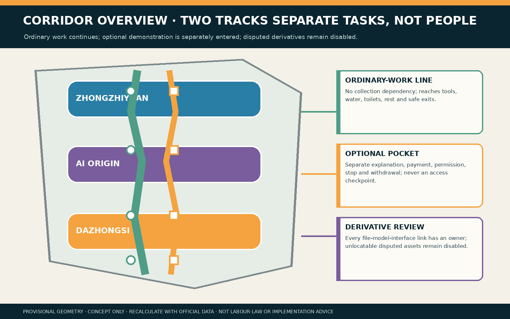
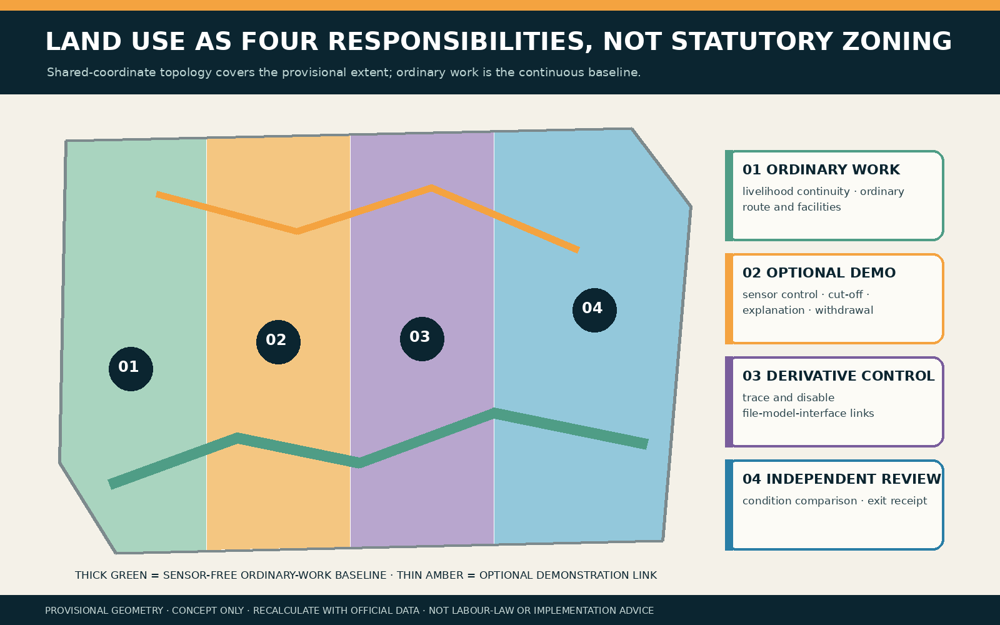
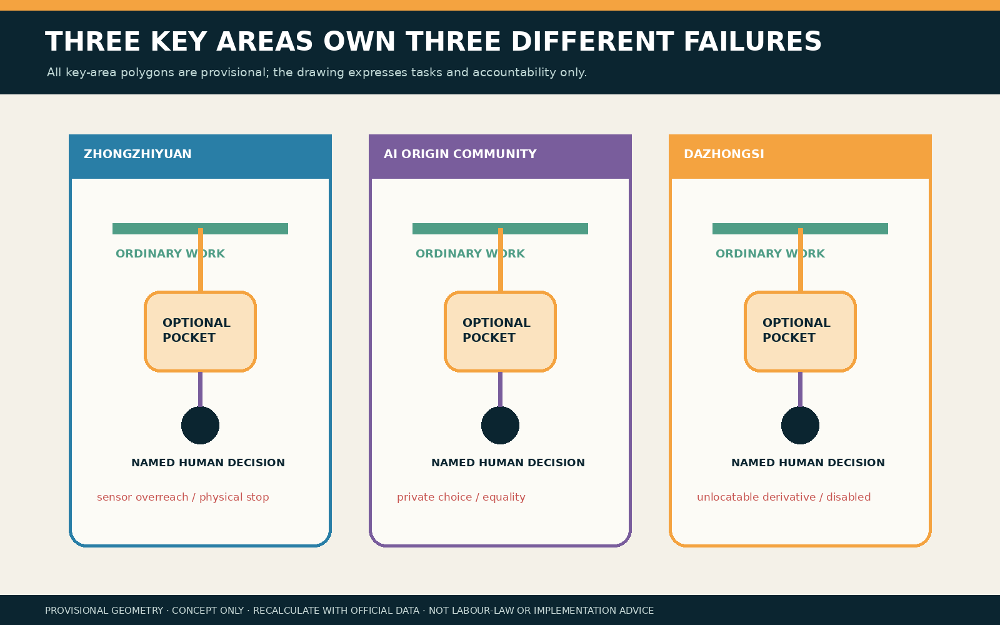
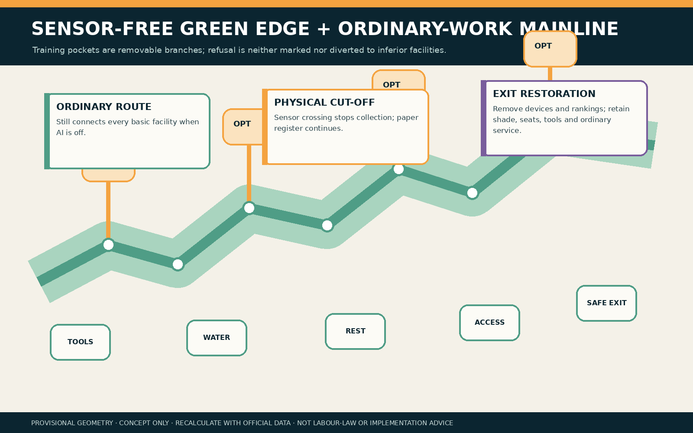
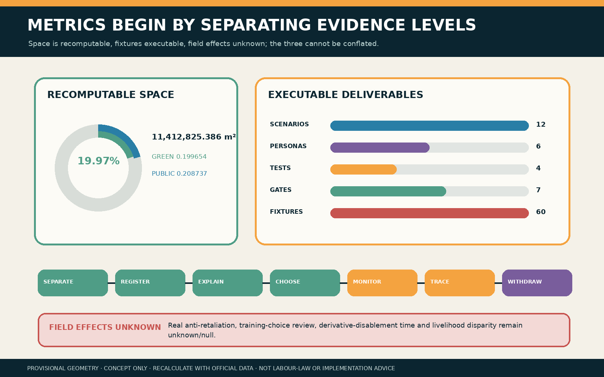
AI only checks approved sensors, flags crossings and lists derivatives. It does not decide willingness, skills, performance, wages, shifts, access or discipline. A failed gate stops training, never ordinary work or basic facilities.
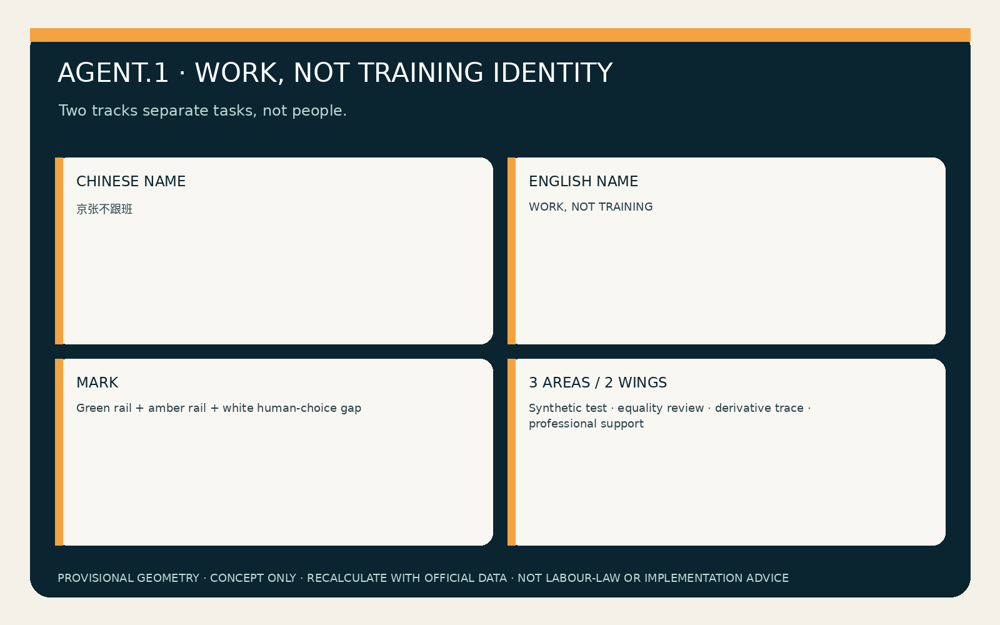
Green and amber rails stay apart through a white human-choice gap; clothes, colour or queues never expose refusal.
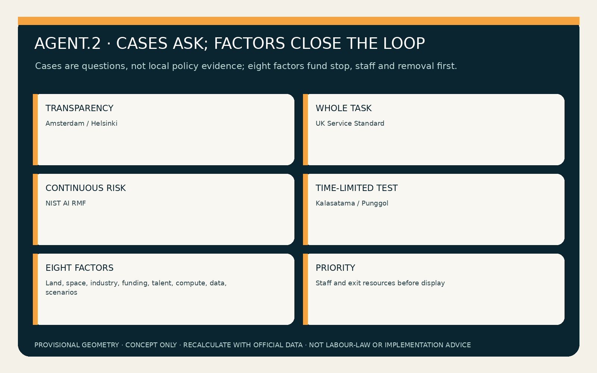
Cases ask questions only; eight factors close a chain from empty-site testing to affected-person co-review, then stop or proceed.
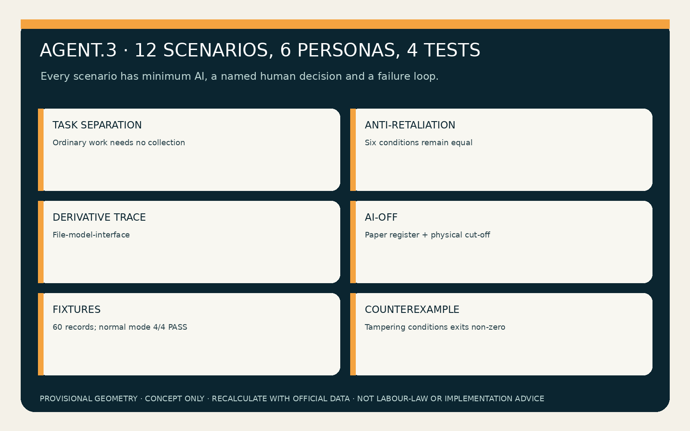
12 scenarios, six personas, four industry tests and 60 synthetic fixtures; tampering with conditions must exit non-zero.
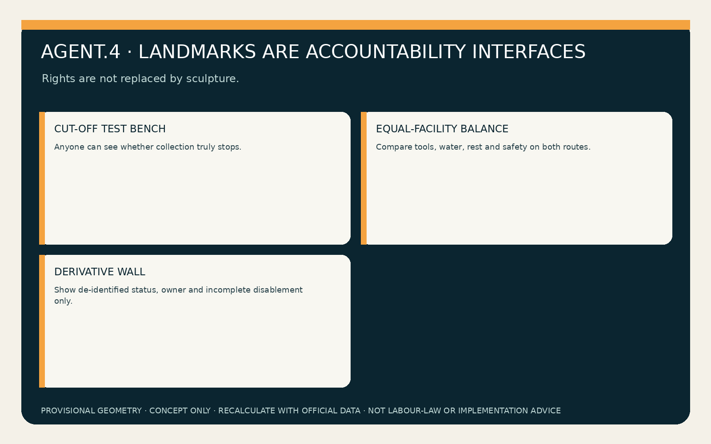
Landmarks are testable accountability interfaces, not sculptures; six components are removable, transferable and auditable.
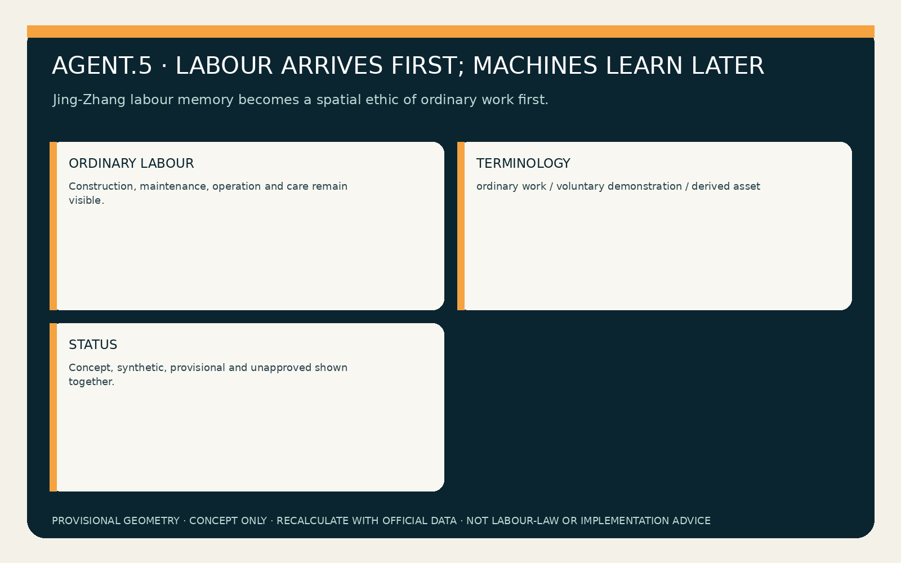
Labour arrives first; machines learn later. Railway labour memory never becomes unpaid training material.
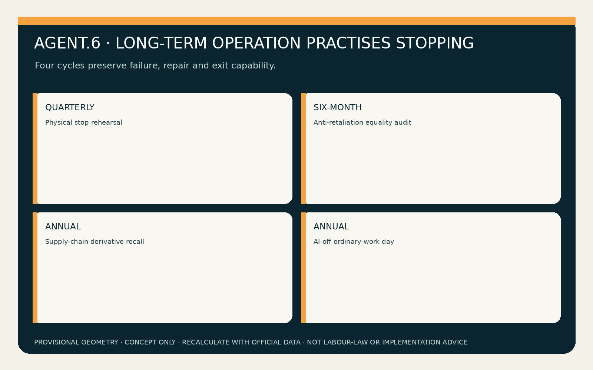
Each cycle hands off a checklist, remediation register, disablement register or offline playbook; no named recipient means cancellation.
| Factor group | Carrier | Transfer / stop |
|---|---|---|
| Land + space | Empty back-of-house site, ordinary line, demonstration pocket | Removable-component register; unequal facilities stop entry |
| Industry + funding | Embodied AI, property, logistics, maintenance | Accountability sheet; no entry without funded stop/disable/remove |
| Talent + compute | Workers/representatives + five professional groups; small offline environment | Seven-gate co-sign; missing owner enters HOLD |
| Data + scenario | Synthetic/authorised data; empty-site then co-review | Fixtures and exit receipt; no field use without approval |
| Responsibility landmark | Components / handoff |
|---|---|
| Zhongzhiyuan cut-off bench | Cut-off + purpose card → sensor-envelope record |
| AI Origin equal-facilities balance | Ordinary wayfinding + demonstration desk → six-condition difference register |
| Dazhongsi derivative wall | Derivative cabinet + receipt box → disable/delete receipt |
| Cycle | Output | Named recipient | Failure / exit |
|---|---|---|---|
| Quarterly physical stop | Sensor-envelope checklist | Scene-safety owner | Failed stop ends training |
| Six-month equality audit | Wage/shift/access/tool/facility remediation register | Labour-rights owner + independent reviewer | Any difference enters HOLD |
| Annual derivative recall | File-model-interface disablement register | Data + supplier owners | Unlocatable assets remain disabled; deletion is not claimed |
| AI-off ordinary-work day | Offline continuity playbook | Operator + affected-worker representatives | Failure to work offline exits the trial |
Buildings, roads, green space, public space, constraints and phasing are conceptual. P1 synthetic rehearsal, P2 anti-retaliation co-review, P3 derivative tracing and P4 removable empty-site co-design may all stop.
Ordinary-work continuity, anti-retaliation audit, choice review, derivative disablement time and condition disparity: unknown/null.
No real person, wage, shift, trajectory or field performance data. Synthetic PASS never replaces affected-person, professional or service-owner judgment.
The taskbook, announcement and local standards support tasks and limits. Provisional polygons support design-model outputs only.
A-SITE-001 provisional geometry; A-CONTROLS-001 no real site; A-TRIGGER-001 not legal advice; A-DERIVATIVE-001 derivatives may be undeletable; A-CHOICE-001 two tracks may expose refusal.
DETERMINISTIC_VALIDATIONSPATIAL_REVIEWVISUAL_PACKAGINGPROFESSIONAL_EVIDENCE
All space is a provisional design model, never an official redline, real workplace, labour-law opinion, government endorsement or implementation promise. Official geometry triggers whole-package recalculation.
English report中文 visualSeparation protocolTask structureRights ledger